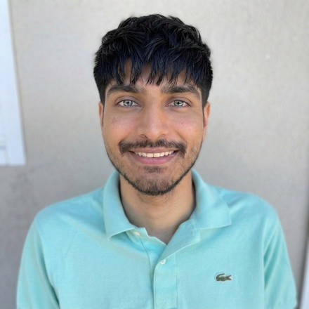
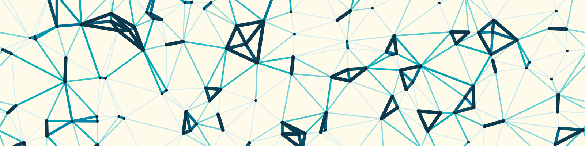
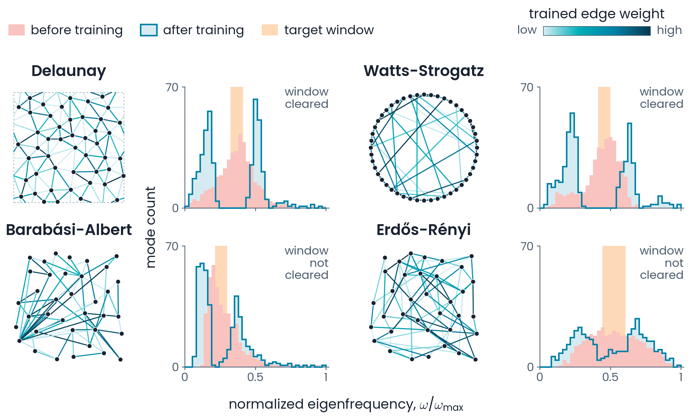
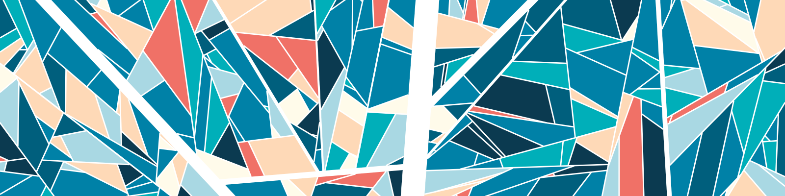
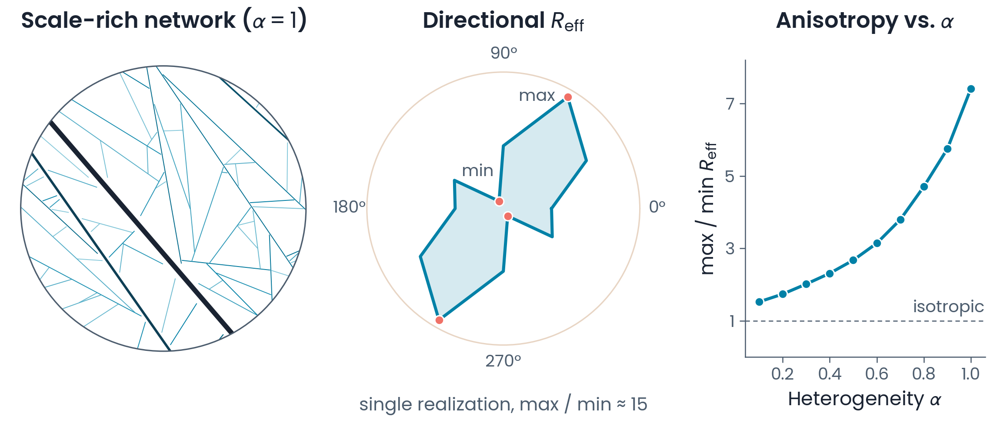
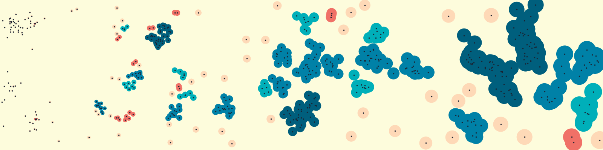
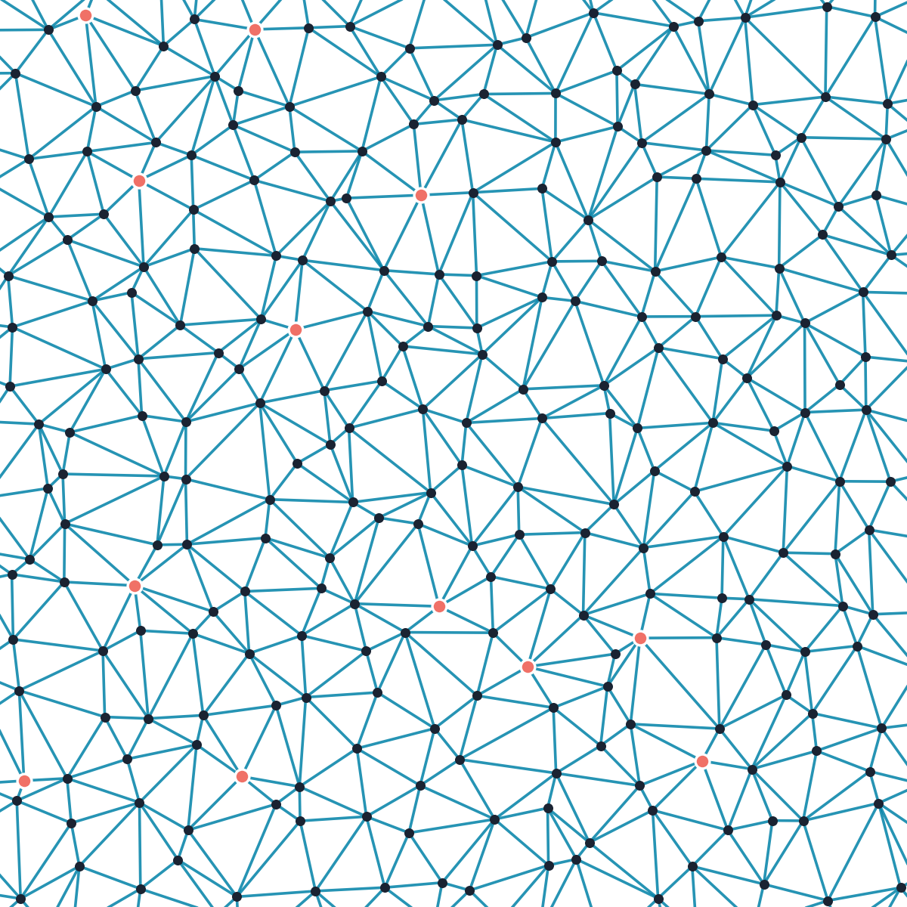
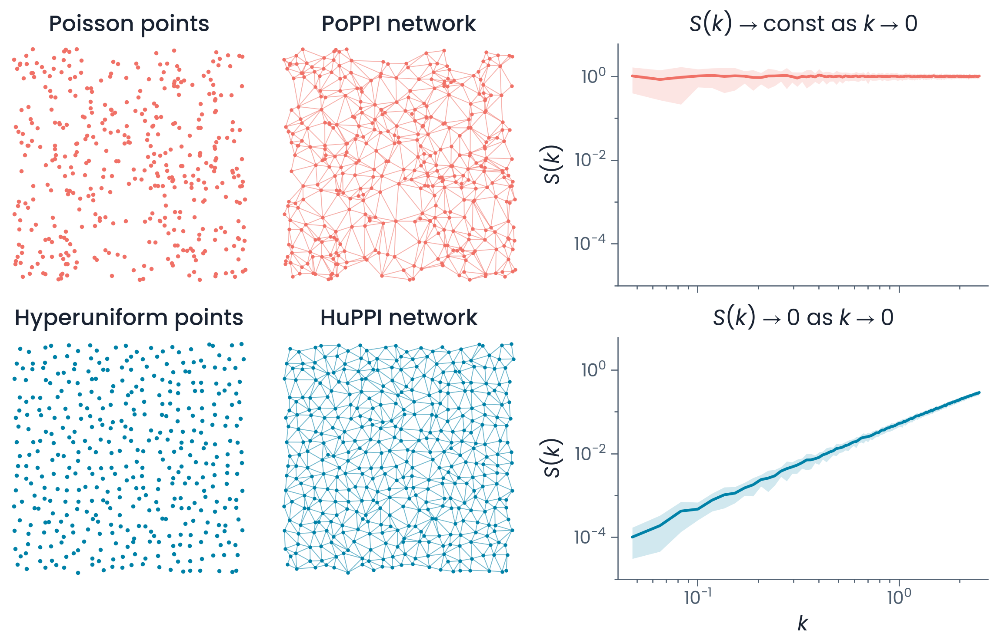

Fifth-year physics PhD student at UCLA, advised by Mason Porter.

My research is in complex systems and statistical physics, with a focus on networks that arise from physical systems. I study both the dynamics on these networks and the dynamics of the networks themselves. I am most interested in physical learning, in which networks of springs or resistors learn a task through local rules (each edge adjusts itself using only what it can measure), and in how the structure of a network limits what such rules can learn and how quickly.
More broadly, I am interested in physical and biological networks that adapt and reorganize, from trainable materials to neural circuits, and in how local changes at individual nodes and edges shape what the whole network can do. I am also interested in using topological data analysis (TDA) for statistical physics, and I developed a weighted persistence method that gives cluster statistics of point patterns, such as the mean cluster size, exactly at every scale.

In physical learning, a network of springs, resistors, or pipes adapts its edge weights (such as stiffnesses or conductances) through local rules, in which each edge changes using only quantities measured at that edge. Many physical-learning methods, such as coupled learning and equilibrium propagation, train a prescribed response between designated source and target nodes, and most studies of mechanical learning use disordered networks derived from jammed packings. We argue that network structure strongly shapes the space of learned solutions.
We examine this for the task of opening a spectral gap (an interval of frequencies in which the network has no vibrational modes) in a disordered spring network. A gap is a property of the whole spectrum, so there are no input or output nodes to place. To our knowledge, gaps at chosen frequencies had been opened only by centralized inverse design or by training that computes the normal modes. I developed a local rule that opens them: random forces drive the network at frequencies in a chosen window, and, by reciprocity, each spring obtains its update from the motion of its own two ends, so no step computes a normal mode.
A trained spring network, driven by a random force whose frequency rises across the target window. Outside the window the network shakes; inside it the network stays nearly still, because training left no vibrational modes there. Edges are coloured by their trained stiffness, darker for stiffer. Right: the trained eigenfrequencies (top) and the response amplitude of the network against the drive frequency (bottom).
Whether the rule succeeds depends heavily on the network structure. Delaunay and Watts-Strogatz networks cleared the window in every run, whereas Barabási-Albert and Erdős-Rényi networks did so in only about half of their runs. These results suggest that the structure of the underlying network, and not only the rule, determines much of what local physical learning can achieve. This is joint work with Pola Pietrzkowski, Linnéa Gyllingberg, Menachem Stern, and Mason Porter.

Eigenfrequency distributions before and after training, with the target window shaded; training succeeds when no eigenfrequencies remain in the window. Each panel shows one run: a successful run for Delaunay and Watts-Strogatz networks, which cleared the window in every run, and an unsuccessful run for Barabási-Albert and Erdős-Rényi networks, which cleared it in about half of their runs. Beside each histogram is the corresponding trained network, with each edge coloured by its learned weight.

Scale-rich metamaterials (Both et al., 2025) are disordered beam materials in which the thicknesses of the beams span orders of magnitude. Earlier work computed their network properties on a dual graph, in which each beam is a node. I represent such a material instead as a spatially embedded network whose edges are its beams and whose nodes sit at the junctions of the beams, so that the network can be printed directly. When I compare with finite-element simulations of the material, the effective resistance across this network in each direction tracks how the stiffness depends on the direction of loading, although it does not give the magnitude of the stiffness. I work on this with Charles Emmett Maher, Katherine Newhall, and Mason Porter.

The effective resistance Reff between opposite sides of a circular sample, measured along different directions, becomes more anisotropic as the heterogeneity parameter α grows. Left: an illustrative scale-rich network with α = 1. Middle: Reff along different directions for one realization with α = 1, whose largest and smallest values differ by a factor of about 15. Right: the ratio of the largest to the smallest Reff, averaged over 5,000 realizations for each α.

Both topological data analysis (TDA) and statistical physics can be used to study how spatial point patterns connect across length scales, but they describe this in different ways. Persistent homology, a central tool of TDA, records the scales at which clusters of points merge and holes appear and fill in, but its standard summaries do not record the number of points in a merger or the area of a hole. Many observables in statistical physics, by contrast, depend directly on this information, such as the number of points in a cluster or the area of a void.
I developed a weighted persistence method that bridges this gap for clustering, and I am writing it up with Charles Emmett Maher, Katherine Newhall, and Mason Porter. By choosing the weights, we obtain quantities that are direct observables of statistical physics, rather than descriptors that one must interpret after computing them. For example, weighting each merger by the sizes of the two merging clusters determines the mean cluster size exactly at every scale. Weighted persistence also distinguishes point patterns that have the same pair correlation function (and therefore the same structure factor).
A point pattern and its simplicial complex as the scale ε grows (points within 2ε of each other are joined). Triangles are shaded by the scale at which they appear, darker for earlier, and enclosed voids are coloured by their area as they open and fill in. Right: each merger of two clusters, drawn as a stem whose height is the product of the two cluster sizes (top), and the mean cluster size that these weighted mergers determine exactly at every scale, which matches a direct count (dots, bottom).

Hyperuniform point patterns look disordered up close, but they suppress density fluctuations at large length scales: the number of points in a large window varies much less from place to place than it does for points scattered at random. Such patterns appear in settings ranging from leaf vein networks to the large-scale distribution of galaxies. We harness them to generate disordered, spatially embedded networks that are distinct from both perfectly ordered lattices and uniformly random spatial networks, which we call hyperuniform-point-pattern-induced (HuPPI) networks, and we compare them to counterpart Poisson-point-pattern-induced (PoPPI) networks. HuPPI networks have smaller mean normalized total effective resistances (lower values mean that current flows more easily through the network) than PoPPI networks for three of the four network-generation methods that we examine, and the network-generation method provides an additional design lever for spatial networks beyond the choice of their underlying point pattern.
Through an NSF-funded collaboration (DMREF), I chose the point patterns and the network-generation methods for disordered networks that Christopher Rock's group at NC State 3D-prints and Karen Daniels's group measures. I am one of the theorists working out why their specific modulus (stiffness per unit mass) changes as the disorder increases.

Poisson (top) and hyperuniform (bottom) point patterns, their Delaunay networks, and their structure factors S(k). Hyperuniform patterns suppress long-wavelength density fluctuations, so S(k) → 0 as k → 0.
I love baking! I make everything from sourdough and pizzas to croissants, brioche rolls, cookies, and all sorts of other things. I enjoy making a lot of the recipes from Claire Saffitz's YouTube channel. I'm also really into chess, both playing and watching. My peak rating is 2150 on Chess.com Rapid, though I try not to think about where it is right now.
Some of my favorite artists are yeule, Sufjan Stevens, Quadeca, Jane Remover, Porter Robinson, and Alex G. If I had to pick one album, it would be Sufjan Stevens' Carrie & Lowell. If you haven't listened to it, I'd really recommend it. See more of my favorite songs →
Office: Mathematical Sciences (MS) 7611